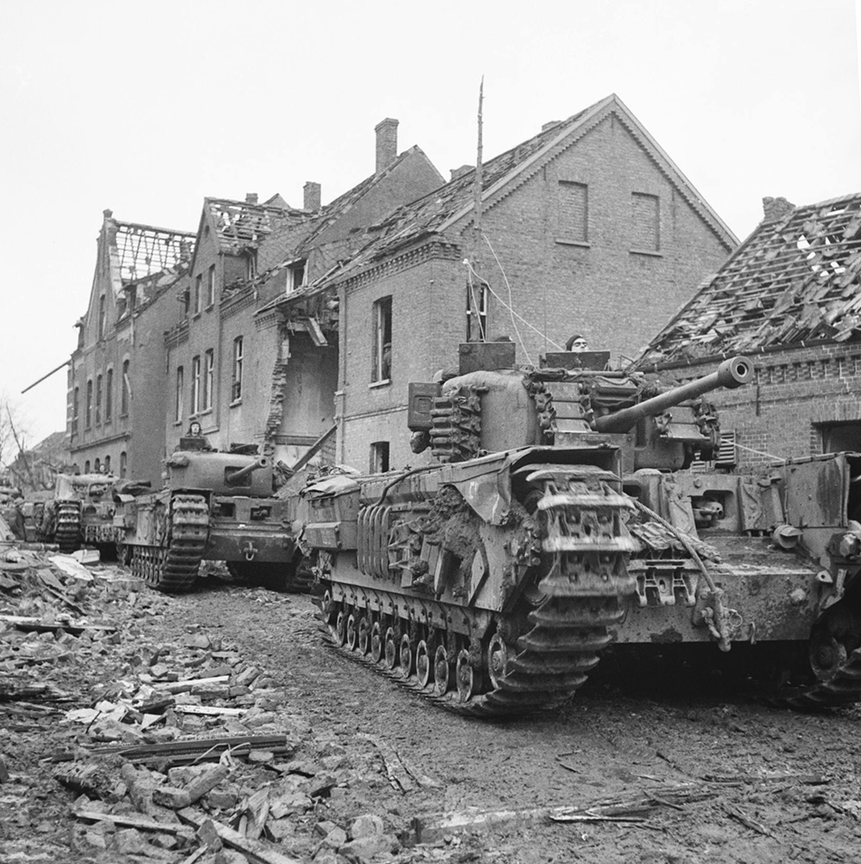
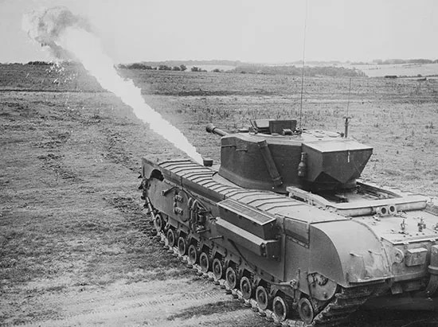
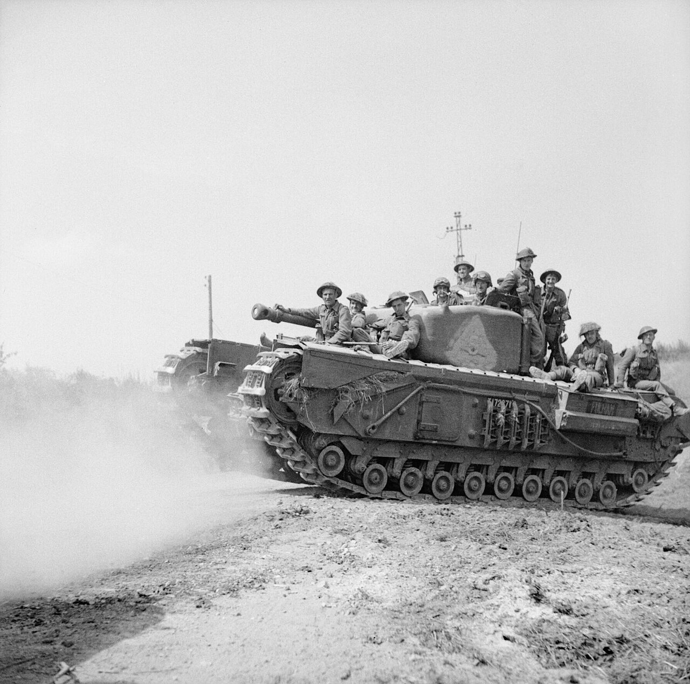
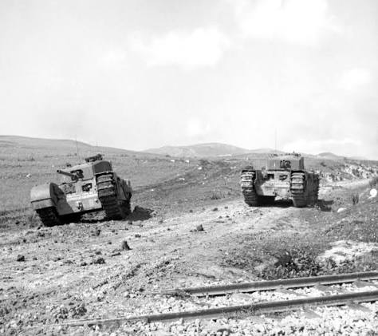
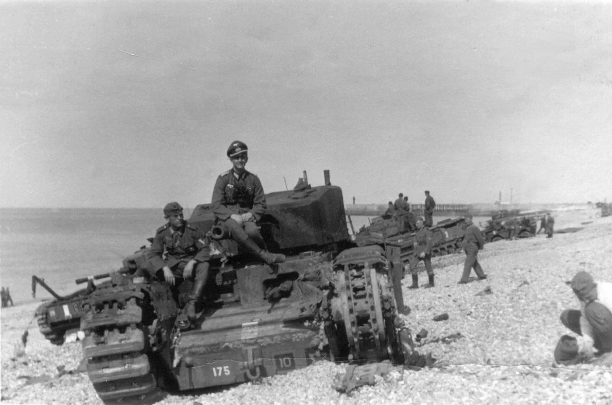

Churchill
Giới thiệu
Churchill là dòng xe tăng bộ binh do Vương quốc Anh phát triển trong Thế chiến II. Được đặt theo tên Thủ tướng Winston Churchill, dòng xe này được thiết kế với lớp giáp rất dày và khả năng vượt địa hình xuất sắc, đáp ứng yêu cầu hỗ trợ bộ binh trong các chiến dịch tấn công.
Trong suốt chiến tranh, Churchill được phát triển thành nhiều phiên bản khác nhau như Mk III, Mk IV, Mk VI và Mk VII. Dòng xe này nổi tiếng nhờ độ bền cao, khả năng leo dốc và vượt chướng ngại vật tốt, đồng thời được sử dụng rộng rãi tại Bắc Phi, Ý và Tây Âu.
Lịch sử phát triển
Sau chiến dịch Dunkirk năm 1940, quân đội Anh nhận thấy cần một mẫu xe tăng có khả năng bảo vệ tốt để hỗ trợ bộ binh vượt qua các tuyến phòng thủ kiên cố. Từ yêu cầu đó, Churchill được phát triển với ưu tiên giáp dày và khả năng vượt địa hình hơn là tốc độ.
Trong quá trình sản xuất, Churchill liên tục được cải tiến với nhiều phiên bản nhằm tăng hỏa lực, độ tin cậy và khả năng chiến đấu. Đây là một trong những dòng xe tăng Anh phục vụ lâu nhất trong Thế chiến II.
Thông số kỹ thuật
| Quốc gia | Vương quốc Anh |
|---|---|
| Tên | Churchill |
| Loại | Xe tăng bộ binh |
| Khối lượng | Khoảng 39–40 tấn |
| Kíp lái | 5 người |
| Động cơ | Bedford Twin-Six |
| Công suất | 350 mã lực |
| Tốc độ tối đa | Khoảng 24 km/h |
| Tầm hoạt động | Khoảng 145 km |
| Giáp | 25–152 mm (tùy phiên bản) |
Vũ khí
Trong quá trình phát triển, Churchill sử dụng nhiều loại pháo khác nhau như 2-pounder, 6-pounder và 75 mm QF tùy từng phiên bản. Các phiên bản cuối chiến tranh chủ yếu sử dụng pháo 75 mm nhằm tăng hiệu quả khi hỗ trợ bộ binh và chiến đấu với xe tăng đối phương.
- Pháo chính: 75 mm QF (phiên bản phổ biến).
- Cơ số đạn: khoảng 84 viên.
- Súng máy BESA 7,92 mm đồng trục.
- Súng máy BESA 7,92 mm phía trước thân xe.
Ưu điểm
- Giáp bảo vệ rất dày.
- Khả năng vượt địa hình xuất sắc.
- Leo dốc và vượt chiến hào rất tốt.
- Độ tin cậy cao.
- Rất phù hợp để hỗ trợ bộ binh.
Nhược điểm
- Tốc độ khá chậm.
- Hỏa lực không mạnh bằng Panther hay Tiger.
- Khó cơ động trên quãng đường dài.
- Trọng lượng lớn gây khó khăn khi vận chuyển.
- Không phù hợp cho chiến tranh cơ động tốc độ cao.
Các trận đánh tiêu biểu
Cuộc đột kích Dieppe (1942)
Churchill lần đầu tiên tham chiến trong cuộc đột kích Dieppe tại Pháp. Mặc dù chiến dịch không thành công do điều kiện bãi biển và hỏa lực mạnh của quân Đức, đây là cơ hội quan trọng để quân đội Anh đánh giá hiệu quả chiến đấu của dòng xe tăng này và rút ra nhiều bài học kinh nghiệm.
Chiến dịch Tunisia (1943)
Tại Bắc Phi, Churchill chứng minh khả năng vượt địa hình và độ bền cao. Xe tham gia hỗ trợ bộ binh trong nhiều trận đánh với lực lượng Đức và Ý, đồng thời đối đầu với Tiger I trong một số cuộc giao tranh.
Trận Normandy (1944)
Sau cuộc đổ bộ D-Day, Churchill được sử dụng rộng rãi tại Normandy để hỗ trợ bộ binh, vượt qua các hàng rào phòng thủ và chiến đấu trong địa hình nhiều hàng rào cây (bocage), nơi khả năng vượt địa hình của xe phát huy hiệu quả.
Trận Caen (1944)
Trong các trận chiến quanh thành phố Caen, Churchill tham gia cùng các đơn vị thiết giáp Anh nhằm xuyên thủng tuyến phòng thủ của Đức. Giáp dày giúp xe chịu được nhiều đòn tấn công khi tiến vào khu vực đô thị.
Chiến dịch vượt sông Rhine (1945)
Ở giai đoạn cuối chiến tranh, Churchill tham gia các chiến dịch vượt sông Rhine và tiến vào lãnh thổ Đức. Xe tiếp tục đảm nhiệm vai trò hỗ trợ bộ binh, phá hủy công sự và mở đường cho lực lượng Đồng Minh.
Đánh giá tổng quan
Churchill là một trong những dòng xe tăng đặc trưng nhất của quân đội Anh trong Thế chiến II. Mặc dù không có tốc độ cao hay hỏa lực mạnh như nhiều xe tăng cùng thời, Churchill lại nổi bật nhờ lớp giáp dày, khả năng vượt địa hình xuất sắc và độ tin cậy cao.
Nhiều biến thể chuyên dụng của Churchill như xe công binh, xe cầu hay xe phun lửa đã đóng góp đáng kể trong các chiến dịch của Đồng Minh. Đây được xem là một trong những dòng xe tăng hỗ trợ bộ binh thành công nhất trong lịch sử quân sự Anh.
Thư viện ảnh



